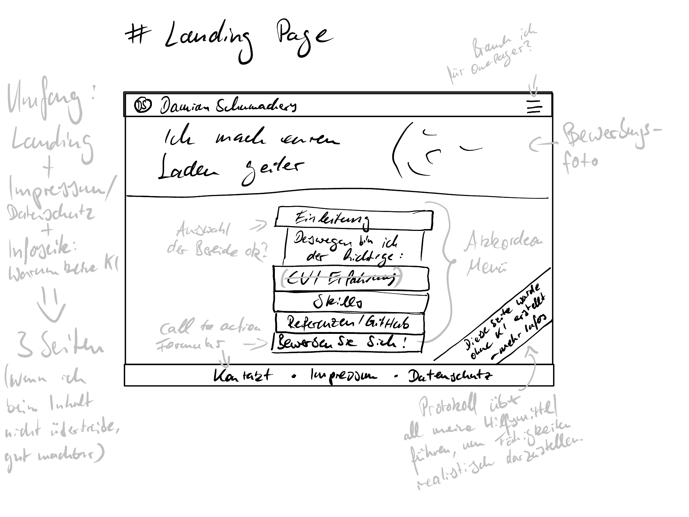

{{ content.content }}
Zunächst muss ich mir ein paar Dinge klar machen.
Die Website ist Teil meiner Bewerbung und soll mich, meine Fähigkeiten und meine Arbeitsweise repräsentieren.
In 11 Tagen beginnt meine Ausbildung am BFW Dortmund. In den ersten Wochen gibt es noch einmal ein intensives Bewerbungstraining und nach spätestens 2 Wochen verschicke ich die ersten Bewerbungen. Für eine ordentliche Basis der Website habe ich also ca. 3 Wochen Zeit.
ich möchte zwar auch mit der Website selbst meinen aktuellen Stand zeigen. Der Fokus liegt aber auf den Inhalten. Außerdem habe ich eine relativ klare Deadline. Ich sollte also vor allem die Basics vernünftig umsetzen und in späteren Iterationen überlegen, inwiefern es sich anbietet zu skalieren.
Es geht hier um eine schlanke, statische Website. Das wichtigste wird daher das Styling. Da ich noch nie mit Bootstrap gearbeitet habe, arbeite ich mich da rein. Für das Routing und dynamische Inhalte nutze ich PHP.
Websites habe ich noch nie wirklich gestaltet. Deswegen halte ich das Design erstmal sehr schlicht. Für den Anfang reicht ein One Pager mit einem Akkordion-Menü.
